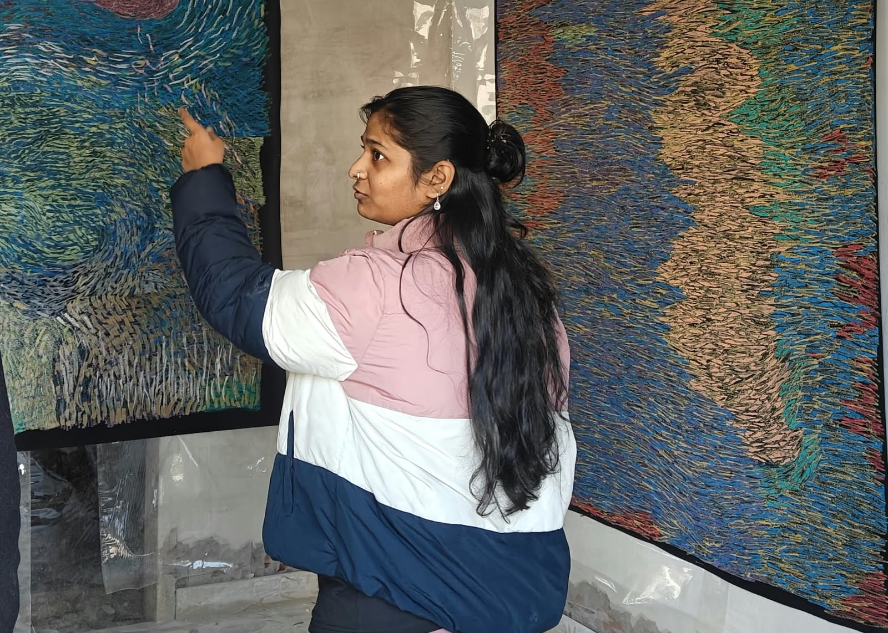
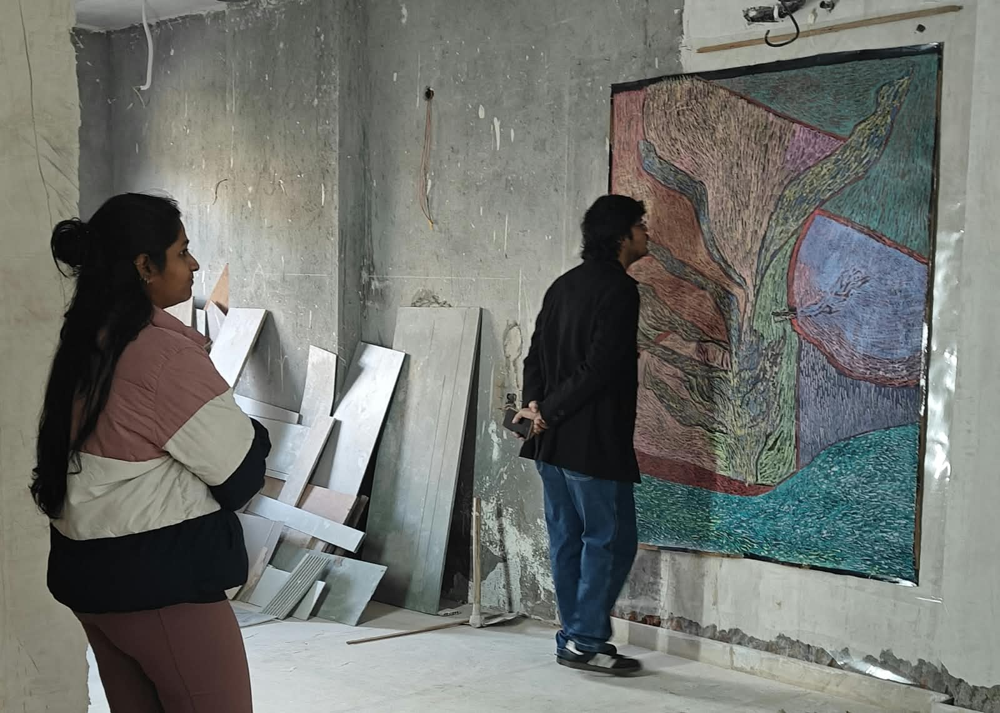
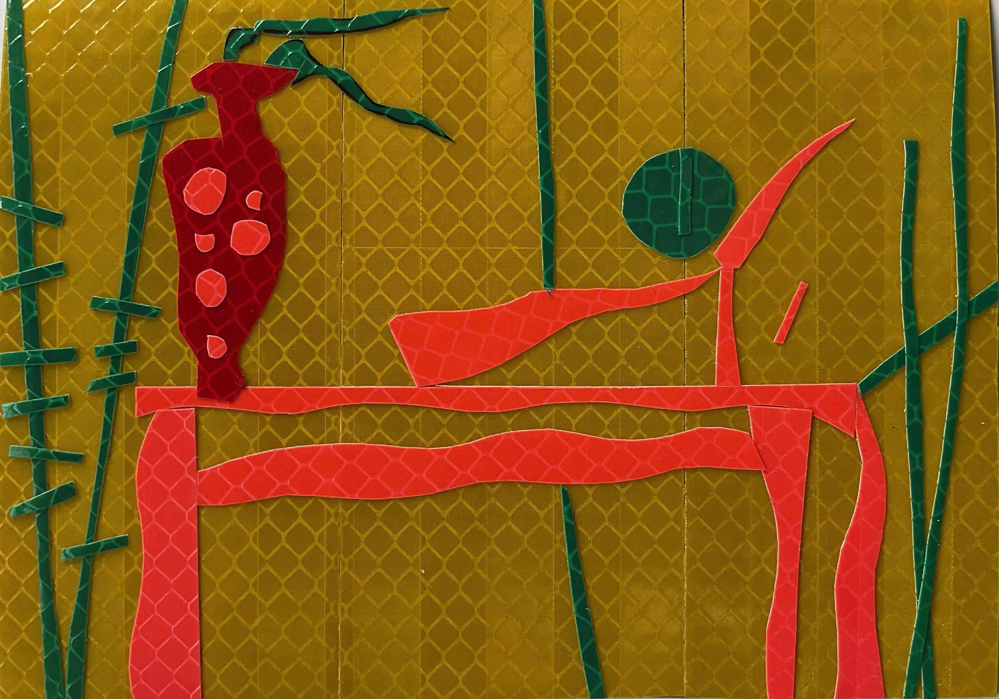
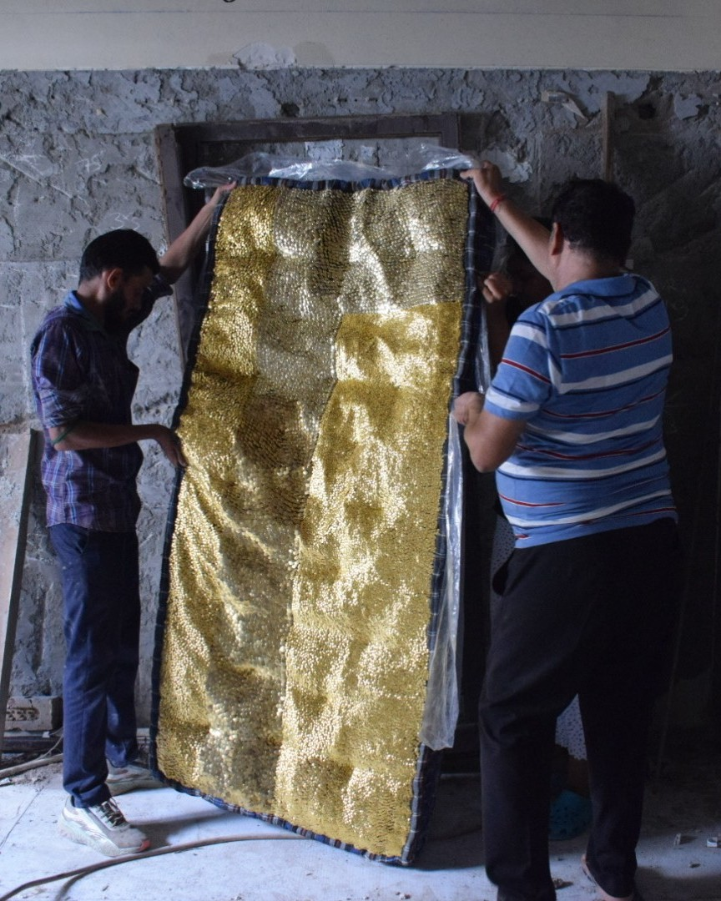

FIELD LOG 01 | INITIATED AT INTERSPACE STUDIO SITE: NEW DELHI
FIELD OBSERVATION & MATERIAL RECORD

KRITIKA GOEL


FIG. 01/03 · Field Record · Kritika Goel in studio, New Delhi FIG. 02/03 · Field Record · Kritika Goel and Shankar Tripathi in studio, New DelhiFIG. 03/03 · Detail of Inside New Studio, 2024 · Reflective Tape on Paper· 4 x 6 inches. Artist's Collection, New Delhi. Documentation Courtesy of Artist.
What does a material register physically before meaning is read into it?
Kritika Goel (b. 1998, New Delhi) is a multimedia artist working across painting,
installation, and digital media. She holds an MFA in Painting from Amity University,
Noida, and has exhibited in group shows including Mute/Unmute at Method Kala Ghoda, Mumbai (2024),
Ode to the Sun at The Stainless Gallery, New Delhi (2024), and at Artbuzz Studios parallel to the India Art Fair.
Her practice was documented during Interspace's curatorial research into emerging contemporary art in India.
Recorded on-site in New Delhi, Kritika's studio contains works shaped through dense layering, mark-making, and direct sensory engagement. Figurative elements and fragments of text appear intermittently across these surfaces. The studio included unframed works on paper, studies taped to the walls, and drawings spread across worktables. Across these works, material interactions construct spatial relationships independent of figuration, drawing attention to optical conditions such as density, opacity, glare, color relationships, chromatic tension and depth.

Detail of If Only I Could Find Myself, 2023 ·
55 × 71 inches
Solid Marker and Paint Pen on Paper. Artist's Collection, New Delhi.
Field Record · 04.02.2026, New Delhi
Kritika Goel and Shankar Tripathi reviewing artist's Gelly Roller Ink drawings in studio.
Install Shot of Baggage of Wealth III, 2024·
34 × 70 inches.
Thumb Pins and Adhesive Glue on Cotton Mattress. Artist's Collection, New Delhi.
Documentation Courtesy of Artist.
Field Record · 04.02.2026, New Delhi
Kritika Goel reviewing her unframed practice charcoal drawings in studio.
In conversation, Kritika described nothingness not as absence but as an active ground for self-formation. She spoke of her practice as an ongoing navigation between meaninglessness and meaning-making. Looking at the works in the studio, this enquiry appeared closely tied to material decisions and surface conditions. Materials are approached in their specificity, through their formal qualities, tendencies, and capacities, before being absorbed into established systems of meaning. Rather than relying on fixed frameworks or inherited meanings, the sensory conditions constructed on the surface become sites through which questions of perception, existence, and meaning are examined. Attentiveness to resonance and dissonance takes material form through colour, texture, and mark-making.
Fluorescent Gelly Roll inks, industrial markers, translucent glass stains on silvered looking glass, and micro-prismatic retro-reflective tape each contribute distinct optical effects. These materials are valued not only for their practical applications but also for how they shape perception. Glass stains alter perception of surface and spatial depth, while retro-reflective tape returns light directly to its source, producing shifts in visibility and glare. Across a broader practice that includes installation and digital media, a consistent concern remains: how states of distance, resonance, or misalignment can be held without requiring resolution. In this context, materials do more than support an image. They increasingly determine the conditions through which the work is encountered.
Across the surfaces documented on-site, material behavior operates as primary evidence rather than passive support. Pairing the tactile friction of hand mark-making with the synthetic sheen of industrial finishes, these works allow colour, surface reflection, and shifting studio light to govern the visual record—making the physical conditions of viewing inseparable from what is documented.